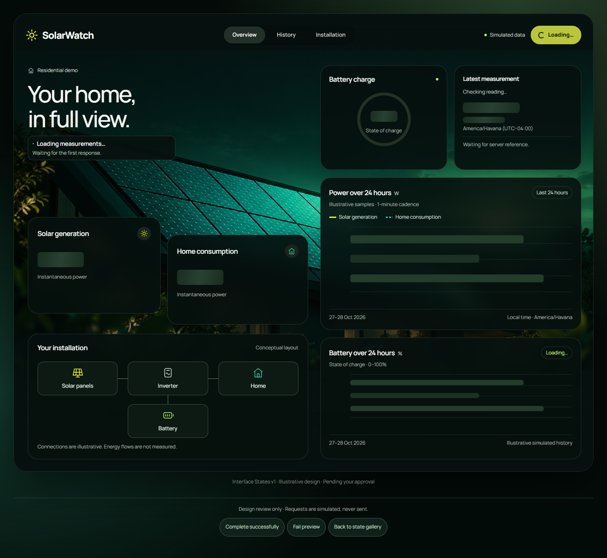
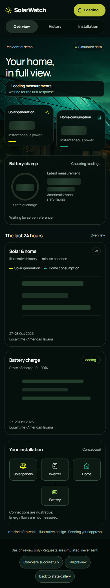

Loading
Escritorio · 1440 px


Móvil · 390 px


En los HTML puedes probar Retry o Refresh. Una consulta de demostración queda pendiente hasta que elijas “Complete successfully” o “Fail preview” en los controles de revisión, fuera de la aplicación. No se envían peticiones ni hay reintentos automáticos.
Notas de estados y validación · Observación de History Mobile en teléfonos de menor altura
Frescura: comparación entre measuredAt y el asOf del último chequeo correcto. Un fallo no produce una referencia nueva. Los estados de las dos consultas deberán resolverse por recurso en la implementación futura.